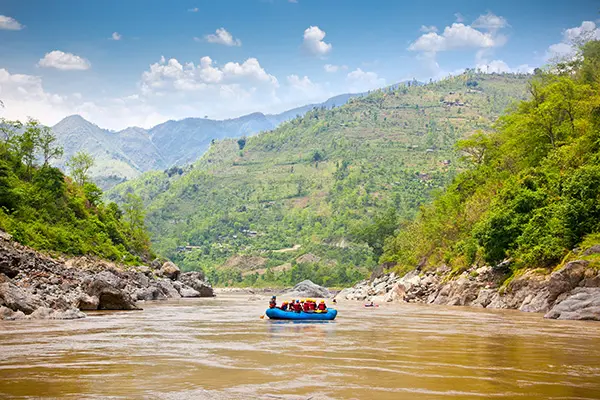

Los Dientes del Diablo
Difficulty: Advanced
Duration: Approximately 4 hours
Are you looking for an exciting river challenge? Los Dientes del Diablo offers an adventurous rafting experience for visitors seeking energetic rapids and an unforgettable day outdoors.
Participants should meet the trip operator's experience, age, and safety requirements. Conditions on the river determine whether the adventure can operate.
Ask About This Trip